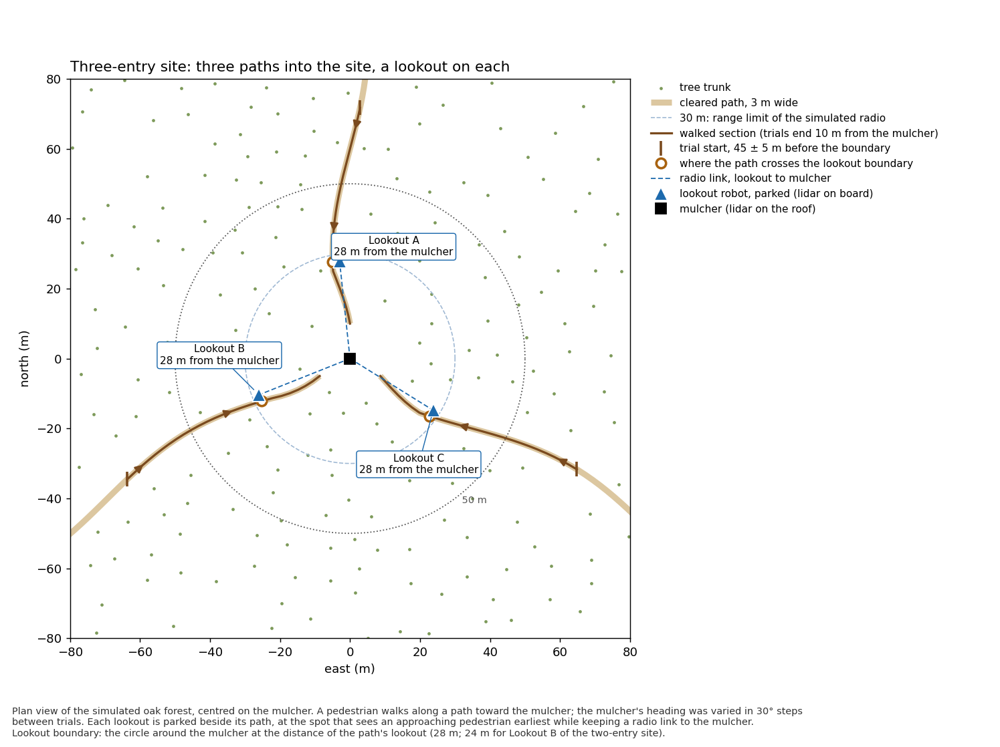

Multi-Robot Active Cooperative Perception
Perceptive exploitation for support
Can robots parked as lookouts on the paths into a forestry mulching site warn the mulcher of an approaching pedestrian earlier than the mulcher's own lidar?
The mulcher's cutting head blocks much of its lidar's forward view. Small ground robots with the same lidar were parked on the access paths as lookouts. Every sensor observed each trial at the same time, so the mulcher alone and the mulcher with lookouts are compared on identical trials.
The experiment
- Type
- Simulated experiment (Ignition Gazebo, Fortress release), run on 24 September 2026
- Site
- Oak forest, 160 m radius, flat ground, 83–85 trees per hectare, 3 m paths; mulcher at the centre with a Velodyne VLP-16 lidar on its roof (2.1 m). The cutting head blocks 15 of the 16 laser channels within ±30° ahead.
- Layouts
- Two-entry site (one path through, two lookouts) and three-entry site (three paths, three lookouts).
- Lookouts
- Clearpath Husky robots with the same lidar, parked beside each path at the position, computed from the map, that sees a pedestrian earliest while keeping a radio link (range limit 30 m). Four are 28 m from the mulcher; Lookout B of the two-entry site is 24 m, as no free spot lies farther out.
- Trials
- A 1.74 m pedestrian model walks along a path at 1.3 m/s in 0.5 m steps, from 45 m (±5 m) before the lookout boundary to 10 m from the mulcher. 12 mulcher headings × each entry × 2 repetitions: 48 and 72 trials, plus 48 control trials.


Detection and outcomes
The rule was fixed in advance: returns at least 0.3 m closer than a 10-scan background are grouped within 0.5 m (in 3-D); an alarm is a group of at least 5 points on at least 2 laser rings, seen in two consecutive scans. An alarm within 1 m of the pedestrian is a detection; any other is a false alarm. The combined system alarms as soon as the mulcher or any lookout does.
- Lookout boundary
- The circle around the mulcher at the path's lookout distance (28 m; 24 m for Lookout B). Primary outcome: detection before the pedestrian reaches it.
- Warning time
- Time from the first alarm until the pedestrian reaches the boundary; negative if after.
- Alternative rules
- Horizontal clustering (the 0.5 m grouping measured horizontally) and an ideal detector (at least 5 points on the pedestrian, from ground truth; an upper bound).
- Control trials
- 12 trials per site repeated with the lookouts moved 1 km away, and again with them never created.
Results
The lookouts give much earlier warning. The mulcher alone first detected the pedestrian at about 14 m, always after the boundary. With the lookouts, every pedestrian was detected before the boundary, about 40 m out: a median of 22 s earlier on the same trial, never less than 20 s.
| Specified rule | Two-entry site · 48 trials | Three-entry site · 72 trials |
|---|---|---|
| Detected before the boundary: mulcher alone / with lookouts | 0 / 48 · 48 / 48 | 0 / 72 · 72 / 72 |
| Median warning time: mulcher alone / with lookouts | −12.5 s / +11.0 s | −11.2 s / +10.8 s |
| First alarm earlier with lookouts, same trial (median; minimum) | 23.1 s; 20.0 s | 21.9 s; 21.5 s |
| Distance at first alarm (median): mulcher alone / with lookouts | 13.9 m / 39.4 m | 13.7 m / 41.7 m |
| Never detected by the mulcher alone | 4 | 18 |
| Exact McNemar test, detection before the boundary | p = 7.1 × 10⁻¹⁵ | p = 4.2 × 10⁻²² |
95 % Wilson intervals for 0 / 48 and 48 / 48: 0–7 % and 93–100 %; for 0 / 72 and 72 / 72: 0–5 % and 95–100 % (approximate, as trials share headings and paths). Same-trial comparisons use trials detected by both (44 of 48, 54 of 72). No sensor detected a pedestrian beyond 50 m under this rule.
![Grouped bar chart in four panels. Columns: two-entry site (48 trials) and three-entry site (72 trials). Top row, detection before the lookout boundary: the mulcher alone reaches 0 % under the specified rule, 62 % and 54 % with horizontal clustering, and 79 % and 76 % with the ideal detector; the mulcher with lookouts reaches 100 % under all three rules. Bottom row, detection more than 50 m from the mulcher: the mulcher alone reaches 0 % under every rule; the mulcher with lookouts reaches 0 % under the specified rule and 100 % under the other two.](figures/catch_rates.png)
![Six panels of curves: rows for the two sites, columns for the specified rule, horizontal clustering and the ideal detector. Each panel shows the percentage of trials warned at least t seconds before the lookout boundary, for t from −18 to 50 s. Under the specified rule the mulcher-alone curve falls to zero before t = −8 s, while the combined curve stays at 100 % until about 10 s. Under the other two rules the mulcher-alone curve falls to zero by about 10 s, while the combined curve stays at 100 % until about 25 s.](figures/warning_curve.png)
Interpretation
- The rule limits range. With 3-D grouping at 0.5 m and rings 2° apart, no group spans two rings beyond about 14 m, so every boundary lies out of the mulcher's reach. The same-trial time gain is therefore the fairer measure.
- Looser rules help the mulcher, and the lookouts more. With the alternative rules the mulcher alone detects 54–79 % before the boundary (median warning 1–8 s); with lookouts, 100 %, beyond 50 m, with 27–29 s.
- Lookouts cover the blind sector. Every trial the mulcher never detected came within 45° of its front; the lookouts detected all of them.
- Each lookout covers its own entry. Removing any one lookout in the three-entry site drops detection before the boundary to 67 %.
- Lookouts do not change what the mulcher sees. In the control trials the mulcher's first alarm fell within one 0.5 m step of the matching trial in all 24 per site.
- The result holds with a published detector. A check made after the results (exploratory): all 120 trials re-run with M-detector (Wu et al., Nature Communications, 2024) as every lidar's detector, its parameters and our alarm rule fixed before its output was seen. The mulcher alone detected 34 / 48 (two lookouts) and 42 / 72 (three lookouts) before the boundary, median warning 2.3 and 3.5 s, at a median 27 and 32 m; with lookouts 48 / 48 and 72 / 72, median 28.8 and 26.9 s, at 60 and 62 m. The first alarm came a median 26.5 and 23.1 s earlier on the same trial; in 4 trials of the three-lookout site the mulcher alarmed first, from a few returns 62–66 m out. No false alarms in simulation; on a real recording M-detector raised many.
Limitations
- Only approaches along paths were tested.
- Lookout distance is capped by a conservative radio model (30 m range, 70 dB loss per trunk), not measured radio.
- Lookouts were placed from a perfect map and modelled as static; exploring and driving to position were out of scope.
- The pedestrian and forest are idealised: constant pace, trunks only, flat ground, exact lidar poses. Two layouts, one forest each.
Code and data
Branch exploitation_experiment of kalhansb/hmr_explo, under experiments/lookout/: analysis output in results/, logs in data/.
LOOKOUT_GPU=1 experiments/lookout/docker_run.sh lk_L2 42 /lookout/run_layout.sh L2 /runs/lookout/L2_full full
LOOKOUT_GPU=1 experiments/lookout/docker_run.sh lk_L3 43 /lookout/run_layout.sh L3 /runs/lookout/L3_full full
python3 /lookout/analyse.py --layout L2=/runs/lookout/L2_full --layout L3=/runs/lookout/L3_full \
--calib /runs/lookout/calib_gpu --out /runs/lookout/resultsThe M-detector check: experiments/site_lookout/mdetector/ (its README has the settings and the commands); output in runs/lookout_md/.